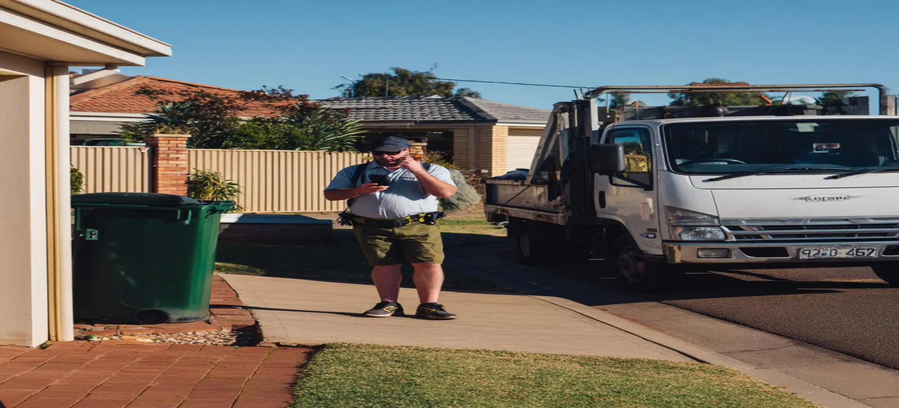

Get A Fast Skip Bin Quote
Getting a quote is often the quickest way to determine which skip bin is suitable for your project. Customers searching for the cheapest skip bin Bunbury option frequently have different requirements, including household cleanups, green waste disposal, renovation debris, commercial rubbish, and construction materials. Because waste type, project size, access conditions, and location can all influence the most suitable solution, providing a few project details helps us offer more accurate recommendations. Our goal is to help customers find a practical option that balances capacity, convenience, and overall value.
Information That Helps Us Assist You Faster
Before contacting us, it can be helpful to gather a few basic details about your project. Information such as the type of waste being removed, estimated waste volume, preferred delivery location, and project timeframe allows us to provide more useful guidance. Customers searching for cheapest skip bin hire Bunbury services often discover that having this information ready helps simplify the booking process and reduces the likelihood of selecting an unsuitable bin size. The more information available, the easier it becomes to recommend an option that suits the project requirements.
Understanding What Affects Skip Bin Pricing
Skip bin pricing can vary depending on several factors. The size of the bin, type of waste, disposal requirements, hire duration, and delivery location can all influence overall costs. Customers looking for the cheapest skip bin Bunbury service often assume the smallest available bin is always the best value, however this is not always the case. A bin that is too small may require additional collections, while an oversized bin can result in paying for unused capacity. Understanding these factors helps customers make more informed decisions when comparing options.
Why Calling Can Be Faster Than Online Research
Many customers spend considerable time comparing websites, reading service descriptions, and reviewing skip bin sizes before making a decision. In many cases, a short phone call can answer the most important questions much faster. By discussing your project directly, we can help identify suitable skip bin options, explain common waste categories, and provide practical guidance based on your specific situation. Customers searching for cheapest skip bin hire Bunbury services often find that direct communication helps eliminate uncertainty and speeds up the booking process.
Who We Help Throughout Bunbury
Our services are used by a wide range of customers throughout Bunbury and surrounding areas. Homeowners often require skip bins during garage cleanouts, moving house, spring cleaning, and garden maintenance projects. Landlords and property managers frequently use skip bins when preparing rental properties for new tenants or managing larger property clearances. Builders and contractors rely on skip bins to manage construction waste, renovation debris, timber, bricks, and other building materials. Businesses also benefit from practical waste management solutions during office relocations, warehouse cleanups, retail refurbishments, and ongoing maintenance work. Regardless of the project type, customers searching for the cheapest skip bin Bunbury service are generally looking for a practical solution that matches both their waste volume and budget.
Ready To Book Your Skip Bin?
Booking a skip bin does not need to be complicated. Whether you already know the bin size you need or require assistance comparing available options, our team can help guide you through the process. Customers looking for cheapest skip bin hire Bunbury services often contact us when they need a straightforward answer about pricing, availability, delivery timeframes, or suitable waste categories. By discussing your project requirements directly, we can help identify practical solutions and answer common questions before the booking is finalised. A quick enquiry can often save time and help ensure the right skip bin is selected from the beginning.
Frequently Asked Questions
How can I get a quote for the cheapest skip bin Bunbury service?
The easiest way is to contact us with a few details about your project. Information such as waste type, estimated volume, location, and preferred hire period allows us to provide more relevant guidance. Having this information available also helps speed up the process and ensures suitable options can be discussed from the beginning.
What information should I provide before booking?
Customers should ideally provide details about the type of waste, approximate quantity, property access conditions, and preferred delivery timeframe. This information helps determine which skip bin size is likely to be the most suitable for the project and reduces the risk of selecting a bin that does not meet the project's waste disposal requirements.
Is the cheapest skip bin hire Bunbury option always the best choice?
Not necessarily. The lowest advertised price may not always provide the best overall value if the bin size is too small or unsuitable for the waste being removed. Choosing a skip bin that accurately matches the project requirements is often the most practical way to avoid additional costs, extra collections, or unnecessary delays.
Can skip bins be used for both residential and commercial projects?
Yes. Skip bins are commonly used across residential, commercial, and construction projects. Customers use them for household cleanups, landscaping work, office relocations, warehouse clearances, renovations, shop fit-outs, and construction waste management. The most suitable skip bin depends on the volume and type of waste being generated during the project.
Why do customers contact us when comparing cheapest skip bin Bunbury providers?
Many customers want more than a simple price comparison. They also want confidence that the selected skip bin will suit their project, waste type, and available space. We help answer common questions about bin sizes, waste categories, project suitability, and booking requirements so customers can make informed decisions before arranging delivery.